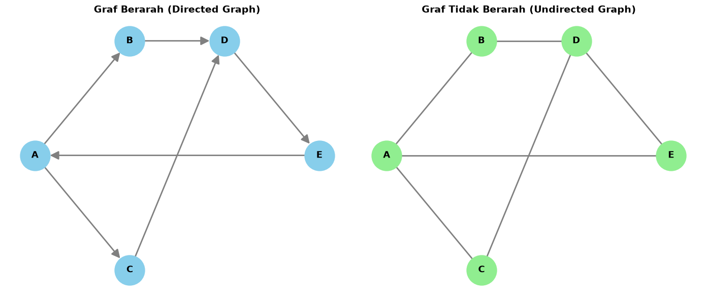

Analisis Graf Berarah dan Tidak Berarah Menggunakan NetworkX#
1. Pembuatan Graf#
Membuat graf berarah (Directed Graph) dan graf tidak berarah (Undirected Graph) menggunakan 5 vertex dan 6 edge dengan library NetworkX.
2. Degree dan Distribusi Derajat#
Menghitung jumlah hubungan setiap vertex serta distribusi frekuensi derajat pada masing-masing graf.
3. Rata-Rata Degree#
Menghitung nilai rata-rata degree untuk mengetahui rata-rata jumlah hubungan setiap vertex.
4. Shortest Path#
Menghitung lintasan terpendek antarvertex, rata-rata jarak terpendek, dan diameter graf.
5. Clustering Coefficient#
Menghitung koefisien klasterisasi setiap vertex untuk mengetahui keterhubungan antarvertex tetangga.
6. Graph Density#
Menghitung kepadatan graf berdasarkan perbandingan jumlah edge aktual dengan jumlah maksimum edge.
7. Adjacency Matrix#
Menampilkan matriks ketetanggaan untuk merepresentasikan hubungan antarvertex dalam bentuk matriks.
8. Kesimpulan#
Membandingkan hasil analisis graf berarah dan tidak berarah untuk mengetahui perbedaan karakteristik keduanya.
!pip install networkx matplotlib pandas numpy
Requirement already satisfied: networkx in /usr/local/python/3.14.2/lib/python3.14/site-packages (3.7)
Requirement already satisfied: matplotlib in /usr/local/python/3.14.2/lib/python3.14/site-packages (3.11.2)
Requirement already satisfied: pandas in /usr/local/python/3.14.2/lib/python3.14/site-packages (3.0.6)
Requirement already satisfied: numpy in /usr/local/python/3.14.2/lib/python3.14/site-packages (2.5.3)
Requirement already satisfied: contourpy>=1.0.1 in /usr/local/python/3.14.2/lib/python3.14/site-packages (from matplotlib) (1.4.0)
Requirement already satisfied: cycler>=0.10 in /usr/local/python/3.14.2/lib/python3.14/site-packages (from matplotlib) (0.12.1)
Requirement already satisfied: fonttools>=4.28.2 in /usr/local/python/3.14.2/lib/python3.14/site-packages (from matplotlib) (4.68.0)
Requirement already satisfied: kiwisolver>=1.3.1 in /usr/local/python/3.14.2/lib/python3.14/site-packages (from matplotlib) (1.5.1)
Requirement already satisfied: packaging>=20.0 in /home/codespace/.local/lib/python3.14/site-packages (from matplotlib) (26.3)
Requirement already satisfied: pillow>=9 in /usr/local/python/3.14.2/lib/python3.14/site-packages (from matplotlib) (13.0.0)
Requirement already satisfied: pyparsing>=3 in /usr/local/python/3.14.2/lib/python3.14/site-packages (from matplotlib) (3.3.3)
Requirement already satisfied: python-dateutil>=2.7 in /home/codespace/.local/lib/python3.14/site-packages (from matplotlib) (2.9.0.post0)
Requirement already satisfied: six>=1.5 in /home/codespace/.local/lib/python3.14/site-packages (from python-dateutil>=2.7->matplotlib) (1.17.0)
[notice] A new release of pip is available: 26.2.1 -> 26.3
[notice] To update, run: python3 -m pip install --upgrade pip
import networkx as nx
import matplotlib.pyplot as plt
import pandas as pd
import numpy as np
print("Semua library berhasil diimpor!")
print("NetworkX version:", nx.__version__)
Semua library berhasil diimpor!
NetworkX version: 3.7
import networkx as nx
import matplotlib.pyplot as plt
import pandas as pd
import numpy as np
# ==================================================
# 1. MEMBUAT DATA GRAF
# ==================================================
vertices = ["A", "B", "C", "D", "E"]
edges = [
("A", "B"),
("A", "C"),
("B", "D"),
("C", "D"),
("D", "E"),
("E", "A")
]
# Posisi vertex agar kedua graf mudah dibandingkan
pos = {
"A": (0, 1),
"B": (1.5, 2),
"C": (1.5, 0),
"D": (3, 2),
"E": (4.5, 1)
}
# ==================================================
# 2. MEMBUAT GRAF BERARAH DAN TIDAK BERARAH
# ==================================================
G1 = nx.DiGraph()
G1.add_nodes_from(vertices)
G1.add_edges_from(edges)
G2 = nx.Graph()
G2.add_nodes_from(vertices)
G2.add_edges_from(edges)
# ==================================================
# 3. VISUALISASI GRAF
# ==================================================
fig, axes = plt.subplots(1, 2, figsize=(14, 6))
# Graf berarah
nx.draw(
G1,
pos,
ax=axes[0],
with_labels=True,
node_color="skyblue",
node_size=1800,
font_size=13,
font_weight="bold",
edge_color="gray",
width=2,
arrows=True,
arrowsize=25
)
axes[0].set_title(
"Graf Berarah (Directed Graph)",
fontsize=14,
fontweight="bold"
)
# Graf tidak berarah
nx.draw(
G2,
pos,
ax=axes[1],
with_labels=True,
node_color="lightgreen",
node_size=1800,
font_size=13,
font_weight="bold",
edge_color="gray",
width=2
)
axes[1].set_title(
"Graf Tidak Berarah (Undirected Graph)",
fontsize=14,
fontweight="bold"
)
plt.tight_layout()
plt.show()
# ==================================================
# 4. FUNGSI ANALISIS GRAF
# ==================================================
def analisis_graf(G, jenis):
n = G.number_of_nodes()
m = G.number_of_edges()
print("\n" + "=" * 65)
print("ANALISIS GRAF", jenis.upper())
print("=" * 65)
print("\nJumlah Vertex :", n)
print("Jumlah Edge :", m)
# ------------------------------------------------
# A. DEGREE SETIAP VERTEX
# ------------------------------------------------
print("\nA. DEGREE SETIAP VERTEX")
if G.is_directed():
degree_data = []
for v in G.nodes():
indeg = G.in_degree(v)
outdeg = G.out_degree(v)
total = G.degree(v)
degree_data.append([
v, indeg, outdeg, total
])
df_degree = pd.DataFrame(
degree_data,
columns=[
"Vertex",
"In-Degree",
"Out-Degree",
"Total Degree"
]
)
else:
degree_data = []
for v in G.nodes():
degree_data.append([
v, G.degree(v)
])
df_degree = pd.DataFrame(
degree_data,
columns=["Vertex", "Degree"]
)
print(df_degree.to_string(index=False))
# ------------------------------------------------
# B. DISTRIBUSI DEGREE
# ------------------------------------------------
print("\nB. DISTRIBUSI DEGREE")
if G.is_directed():
in_degree = dict(G.in_degree())
out_degree = dict(G.out_degree())
total_degree = dict(G.degree())
print("\nDistribusi In-Degree:")
print(
pd.Series(list(in_degree.values()))
.value_counts()
.sort_index()
.rename_axis("Degree")
.to_string()
)
print("\nDistribusi Out-Degree:")
print(
pd.Series(list(out_degree.values()))
.value_counts()
.sort_index()
.rename_axis("Degree")
.to_string()
)
print("\nDistribusi Total Degree:")
print(
pd.Series(list(total_degree.values()))
.value_counts()
.sort_index()
.rename_axis("Degree")
.to_string()
)
else:
degrees = dict(G.degree())
distribution = (
pd.Series(list(degrees.values()))
.value_counts()
.sort_index()
)
distribution.index.name = "Degree"
distribution.name = "Frekuensi"
print(distribution.to_string())
# ------------------------------------------------
# C. RATA-RATA DEGREE
# ------------------------------------------------
print("\nC. RATA-RATA DEGREE")
avg_degree = sum(dict(G.degree()).values()) / n
print("Average Degree :", round(avg_degree, 4))
if G.is_directed():
avg_in = sum(dict(G.in_degree()).values()) / n
avg_out = sum(dict(G.out_degree()).values()) / n
print("Average In-Degree :", round(avg_in, 4))
print("Average Out-Degree :", round(avg_out, 4))
# ------------------------------------------------
# D. AVERAGE SHORTEST PATH LENGTH
# ------------------------------------------------
print("\nD. JARAK TERPENDEK SETIAP PASANGAN VERTEX")
distances = dict(nx.all_pairs_shortest_path_length(G))
paths = dict(nx.all_pairs_shortest_path(G))
shortest_data = []
for asal in G.nodes():
for tujuan in G.nodes():
if asal == tujuan:
continue
if tujuan in distances[asal]:
shortest_data.append([
asal,
tujuan,
" -> ".join(paths[asal][tujuan]),
distances[asal][tujuan]
])
df_shortest = pd.DataFrame(
shortest_data,
columns=[
"Asal",
"Tujuan",
"Lintasan Terpendek",
"Jarak"
]
)
print(df_shortest.to_string(index=False))
# Menghitung rata-rata shortest path
if G.is_directed():
connected = nx.is_strongly_connected(G)
else:
connected = nx.is_connected(G)
if connected:
avg_shortest = nx.average_shortest_path_length(G)
diameter = nx.diameter(G)
print("\nAverage Shortest Path Length :",
round(avg_shortest, 4))
print("Diameter Graf :", diameter)
else:
avg_shortest = None
print("Graf tidak terhubung secara keseluruhan.")
print("Average Shortest Path dan diameter global tidak tersedia.")
# ------------------------------------------------
# E. CLUSTERING COEFFICIENT
# ------------------------------------------------
print("\nE. KOEFISIEN KLASTERISASI")
clustering = nx.clustering(G)
df_clustering = pd.DataFrame(
list(clustering.items()),
columns=[
"Vertex",
"Clustering Coefficient"
]
)
print(df_clustering.to_string(index=False))
avg_clustering = nx.average_clustering(G)
print("\nAverage Clustering Coefficient :",
round(avg_clustering, 4))
# ------------------------------------------------
# F. GRAPH DENSITY
# ------------------------------------------------
print("\nF. KEPADATAN GRAF (GRAPH DENSITY)")
density = nx.density(G)
if G.is_directed():
max_edges = n * (n - 1)
else:
max_edges = n * (n - 1) / 2
print("Edge Aktual :", m)
print("Edge Maksimal :", int(max_edges))
print("Graph Density :", round(density, 4))
print("Density (%) :", round(density * 100, 2), "%")
# ------------------------------------------------
# G. ADJACENCY MATRIX
# ------------------------------------------------
print("\nG. MATRIKS ADJACENCY")
matrix = nx.to_numpy_array(
G,
nodelist=vertices,
dtype=int
)
df_matrix = pd.DataFrame(
matrix,
index=vertices,
columns=vertices
)
print(df_matrix.to_string())
# ------------------------------------------------
# H. VERIFIKASI
# ------------------------------------------------
print("\nH. VERIFIKASI")
print("Total Degree :", sum(dict(G.degree()).values()))
if G.is_directed():
print("Total In-Degree :",
sum(dict(G.in_degree()).values()))
print("Total Out-Degree :",
sum(dict(G.out_degree()).values()))
else:
print("2 x Jumlah Edge :",
2 * G.number_of_edges())
return {
"average_degree": avg_degree,
"average_shortest": avg_shortest,
"average_clustering": avg_clustering,
"density": density,
"diameter": diameter if connected else None
}
# ==================================================
# 5. ANALISIS GRAF BERARAH
# ==================================================
hasil_berarah = analisis_graf(
G1,
"Berarah"
)
# ==================================================
# 6. ANALISIS GRAF TIDAK BERARAH
# ==================================================
hasil_tidak_berarah = analisis_graf(
G2,
"Tidak Berarah"
)
# ==================================================
# 7. PERBANDINGAN HASIL KEDUA GRAF
# ==================================================
print("\n" + "=" * 65)
print("PERBANDINGAN HASIL ANALISIS GRAF")
print("=" * 65)
comparison = pd.DataFrame({
"Parameter": [
"Jumlah Vertex",
"Jumlah Edge",
"Average Degree",
"Average Shortest Path",
"Average Clustering Coefficient",
"Graph Density",
"Diameter"
],
"Graf Berarah": [
G1.number_of_nodes(),
G1.number_of_edges(),
hasil_berarah["average_degree"],
hasil_berarah["average_shortest"],
hasil_berarah["average_clustering"],
hasil_berarah["density"],
hasil_berarah["diameter"]
],
"Graf Tidak Berarah": [
G2.number_of_nodes(),
G2.number_of_edges(),
hasil_tidak_berarah["average_degree"],
hasil_tidak_berarah["average_shortest"],
hasil_tidak_berarah["average_clustering"],
hasil_tidak_berarah["density"],
hasil_tidak_berarah["diameter"]
]
})
print(comparison.to_string(index=False))

=================================================================
ANALISIS GRAF BERARAH
=================================================================
Jumlah Vertex : 5
Jumlah Edge : 6
A. DEGREE SETIAP VERTEX
Vertex In-Degree Out-Degree Total Degree
A 1 2 3
B 1 1 2
C 1 1 2
D 2 1 3
E 1 1 2
B. DISTRIBUSI DEGREE
Distribusi In-Degree:
Degree
1 4
2 1
Distribusi Out-Degree:
Degree
1 4
2 1
Distribusi Total Degree:
Degree
2 3
3 2
C. RATA-RATA DEGREE
Average Degree : 2.4
Average In-Degree : 1.2
Average Out-Degree : 1.2
D. JARAK TERPENDEK SETIAP PASANGAN VERTEX
Asal Tujuan Lintasan Terpendek Jarak
A B A -> B 1
A C A -> C 1
A D A -> B -> D 2
A E A -> B -> D -> E 3
B A B -> D -> E -> A 3
B C B -> D -> E -> A -> C 4
B D B -> D 1
B E B -> D -> E 2
C A C -> D -> E -> A 3
C B C -> D -> E -> A -> B 4
C D C -> D 1
C E C -> D -> E 2
D A D -> E -> A 2
D B D -> E -> A -> B 3
D C D -> E -> A -> C 3
D E D -> E 1
E A E -> A 1
E B E -> A -> B 2
E C E -> A -> C 2
E D E -> A -> B -> D 3
Average Shortest Path Length : 2.2
Diameter Graf : 4
E. KOEFISIEN KLASTERISASI
Vertex Clustering Coefficient
A 0
B 0
C 0
D 0
E 0
Average Clustering Coefficient : 0.0
F. KEPADATAN GRAF (GRAPH DENSITY)
Edge Aktual : 6
Edge Maksimal : 20
Graph Density : 0.3
Density (%) : 30.0 %
G. MATRIKS ADJACENCY
A B C D E
A 0 1 1 0 0
B 0 0 0 1 0
C 0 0 0 1 0
D 0 0 0 0 1
E 1 0 0 0 0
H. VERIFIKASI
Total Degree : 12
Total In-Degree : 6
Total Out-Degree : 6
=================================================================
ANALISIS GRAF TIDAK BERARAH
=================================================================
Jumlah Vertex : 5
Jumlah Edge : 6
A. DEGREE SETIAP VERTEX
Vertex Degree
A 3
B 2
C 2
D 3
E 2
B. DISTRIBUSI DEGREE
Degree
2 3
3 2
C. RATA-RATA DEGREE
Average Degree : 2.4
D. JARAK TERPENDEK SETIAP PASANGAN VERTEX
Asal Tujuan Lintasan Terpendek Jarak
A B A -> B 1
A C A -> C 1
A D A -> B -> D 2
A E A -> E 1
B A B -> A 1
B C B -> A -> C 2
B D B -> D 1
B E B -> A -> E 2
C A C -> A 1
C B C -> A -> B 2
C D C -> D 1
C E C -> A -> E 2
D A D -> B -> A 2
D B D -> B 1
D C D -> C 1
D E D -> E 1
E A E -> A 1
E B E -> D -> B 2
E C E -> D -> C 2
E D E -> D 1
Average Shortest Path Length : 1.4
Diameter Graf : 2
E. KOEFISIEN KLASTERISASI
Vertex Clustering Coefficient
A 0
B 0
C 0
D 0
E 0
Average Clustering Coefficient : 0.0
F. KEPADATAN GRAF (GRAPH DENSITY)
Edge Aktual : 6
Edge Maksimal : 10
Graph Density : 0.6
Density (%) : 60.0 %
G. MATRIKS ADJACENCY
A B C D E
A 0 1 1 0 1
B 1 0 0 1 0
C 1 0 0 1 0
D 0 1 1 0 1
E 1 0 0 1 0
H. VERIFIKASI
Total Degree : 12
2 x Jumlah Edge : 12
=================================================================
PERBANDINGAN HASIL ANALISIS GRAF
=================================================================
Parameter Graf Berarah Graf Tidak Berarah
Jumlah Vertex 5.0 5.0
Jumlah Edge 6.0 6.0
Average Degree 2.4 2.4
Average Shortest Path 2.2 1.4
Average Clustering Coefficient 0.0 0.0
Graph Density 0.3 0.6
Diameter 4.0 2.0